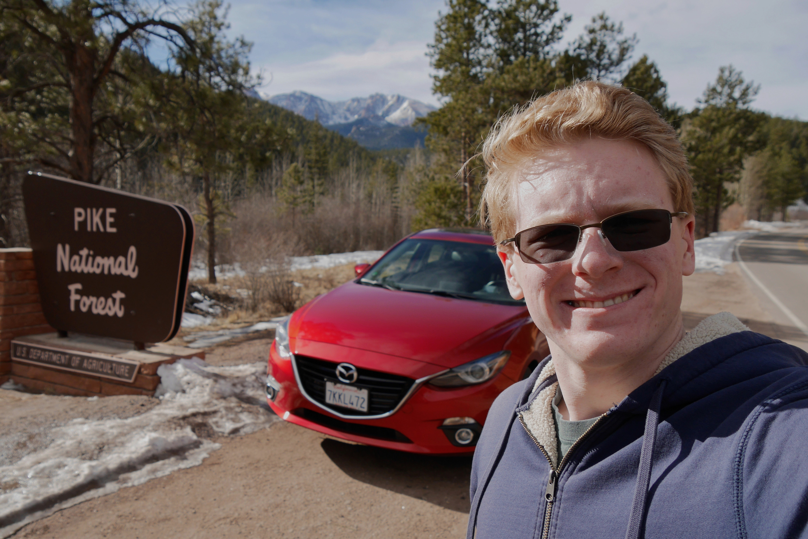

I study Computer Science at Baylor University, and I will finally graduate in December 2019. In my free time I enjoy hiking, camping, photography and autocross. I am also a ThinkPad enthusiast (because the TrackPoint is the superior way to navigate a graphical system). For more about my professional achievements, please see my resume.
Visiting Pike's Peak, December 2018